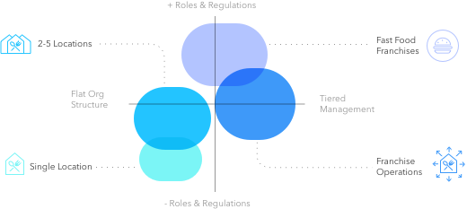

Project Background
Americans spend more money eating out than they do on groceries; the service industry is a multi-billion dollar industry. One of the many unique business challenges to running a restaurant is the tight margin between running costs (food, liquor, rent, labor, etc.) and profit.
HotSchedules is a giant in the service industry, with over 370.1K daily native users and even more on their web app. While the product is an industry-standard, more and more competitors were starting to disrupt the space.
Our Goal:
Instead of offering one, generic solution to all users, create a customized experience for restaurants at different scales. Correctly pair and scale the complexity of features to each archetype, so scheduling is tailored to user needs.
Definition
Scheduling makes a huge difference in the quality of life to shift labor. Multiple small shifts spaced out by inconvenient 2 -3 hours can often result in feeling more like an 80 hour week when often the pay is only for a fraction of that time. Moreover, too few shifts or last-minute shift changes can also contribute to poor working conditions. Employee turn-around can be directly linked to scheduling. However, creating and managing a good schedule puts a large burden on restaurant owners.
Labor costs versus sales forecasting needs to be carefully managed to ensure profitability. HotSchedules - scheduling offers solutions to these problems. However, the scheduling portion of the product retained an outdated and hard to use interface compared to the sleeker and more modern competitors.
First, research identified a few scheduling archetypes. All of these archetypes had different processes and requirements of the scheduler.
- Single location with one owner/manager
- Owners with 2-5 locations and multiple managers
- Franchise operations
- Fast-food franchises
Archetypes
